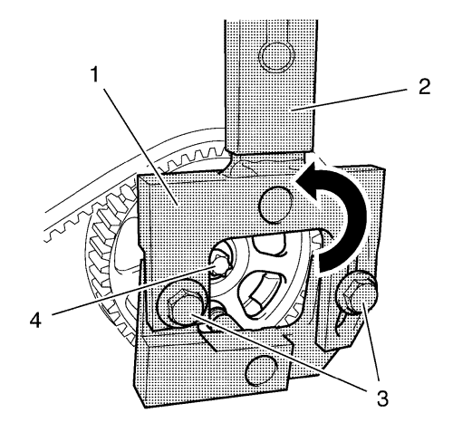
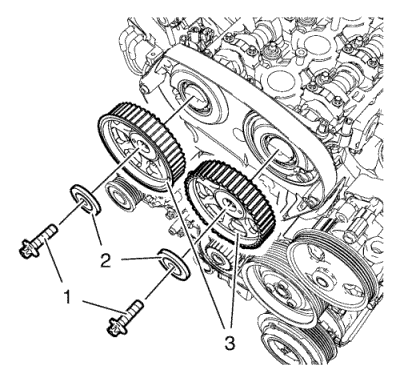

Sustitución del engranaje del árbol de levas
Herramientas especiales
| • | EN-6347 Herramienta de fijación |
Si desea informarse sobre herramientas regionales equivalentes. Consulte Herramientas especiales → 1.6L LXT.
Procedimiento de desmontaje
- Abra el capó.
- Retire la correa dentada. Consultar Sustitución de la correa de distribución .

Nota: Es necesario un segundo técnico.
- Monte la herramienta de fijación EN-6347 (1) y la prolongación de la herramienta de fijación EN-956-1 (2) en el piñón del árbol de levas de escape.
- Afloje los tornillos de ajuste (3) de la herramienta de fijación EN-6347.
Nota: Las ranuras de la herramienta de fijación EN-6347 deben localizarse en el piñón del árbol de levas. Compruebe si está bien asentado.
- Apriete los 2 tornillos de ajuste (3).
- Afloje el tornillo del piñón del árbol de levas de escape (4) mientras sujeta el piñón con la herramienta de fijación EN-6347.
- 7. Desmonte la herramienta de fijación EN-6347 y la prolongación EN-956-1 del piñón del árbol de levas de escape.
- Quite el tornillo del piñón del árbol de levas de escape (4).
- Desmonte el piñón del árbol de levas de escape.
- Repita el mismo procedimiento en el piñón del árbol de levas de admisión para desmontarlo.
Procedimiento de montaje

- Monte los piñones del árbol de levas (3).
Nota: Gire los piñones hasta que queden bloqueados en la posición correcta.
- Monte las arandelas del piñón del árbol de levas (2) y los tornillos del piñón del árbol de levas (1) y apriételos a mano.
- Monte la herramienta de fijación EN-6347 y la prolongación EN-956-1.
Precaución:Consulte Precaución con las fijaciones en la sección Prólogo.
Nota: Es necesario un segundo técnico.
- Apriete los tornillos a 67,5 N·m (50 lib. pie).
- Monte la correa de distribución. Consultar Sustitución de la correa de distribución .
- 4. Desmonte la herramienta de fijación EN-6347 y la prolongación EN-956-1 del piñón del árbol de levas de escape.
- Cierre el capó.
| © Copyright Chevrolet. All rights reserved |